Projet BTS SIO SISR | Domaine : btssio.local | Serveur : SRV-AD01
Configuration VM · Installation OS · Configuration initiale
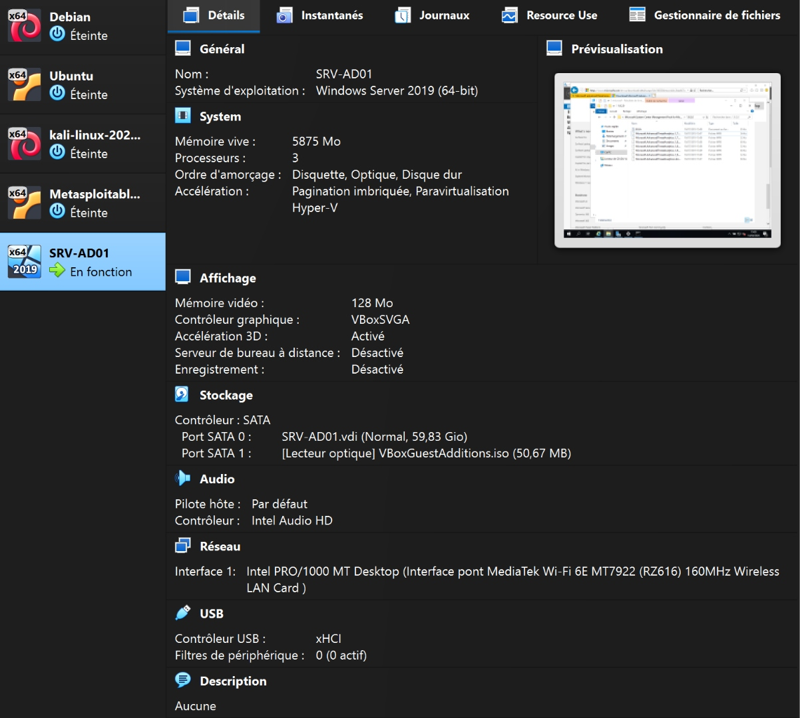
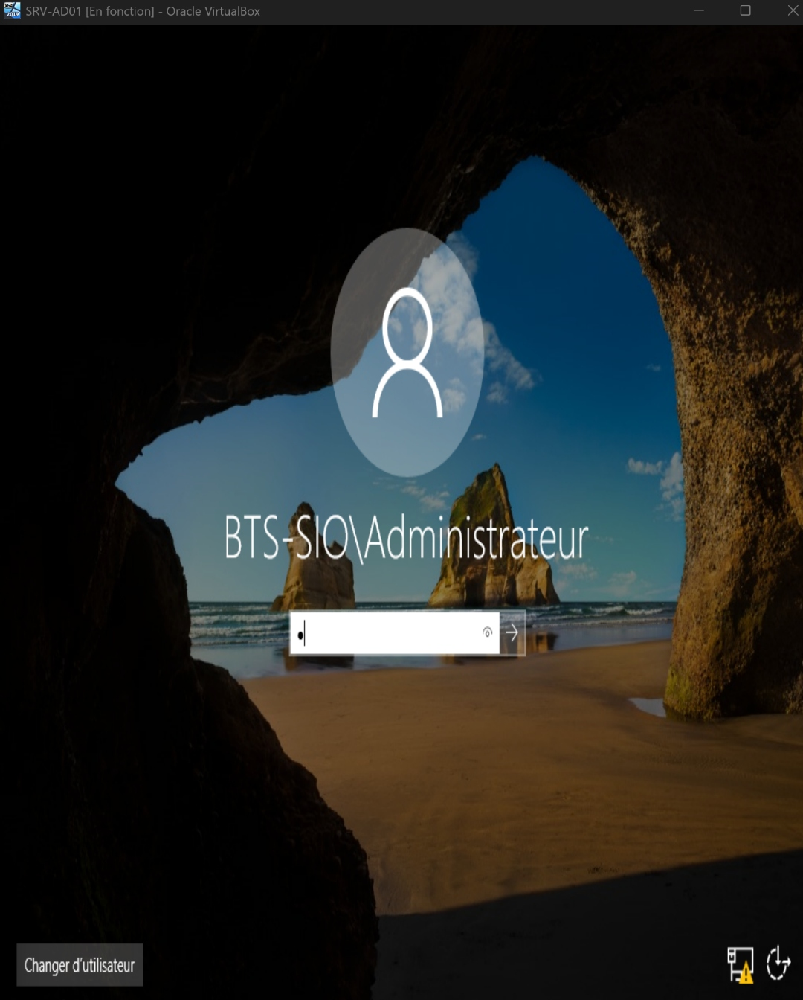
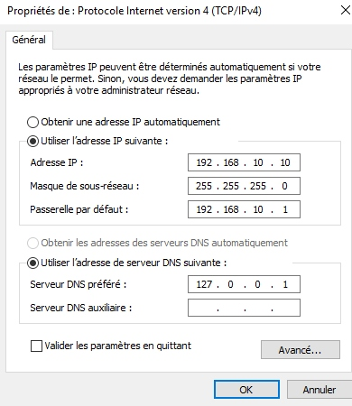
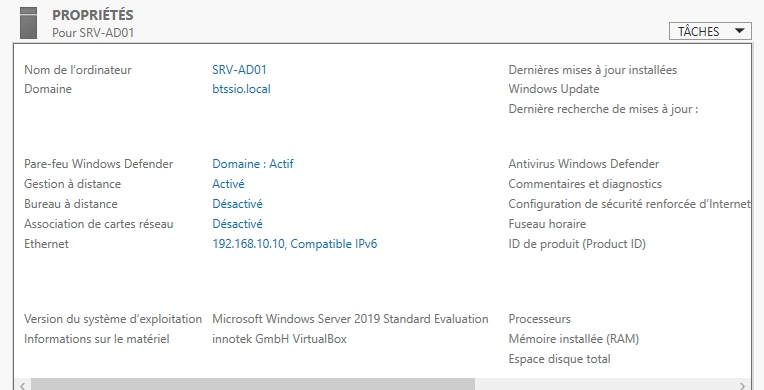
Installation AD DS · Promotion en contrôleur de domaine · Vérification des services
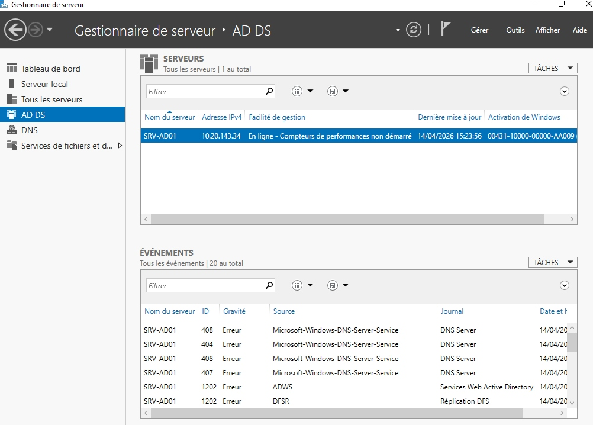
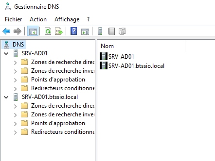
| Élément vérifié | Résultat | Statut |
|---|---|---|
| Rôle AD DS installé | Visible dans le Gestionnaire de serveur | OK |
| Rôle DNS installé | Visible dans le Gestionnaire de serveur | OK |
| Domaine btssio.local créé | Visible dans ADUC | OK |
| Zone DNS btssio.local | Présente dans la console DNS | OK |
| Connexion domaine | BTS-SIO\Administrateur | OK |
OU · Utilisateurs · Groupes · Import CSV · GPO
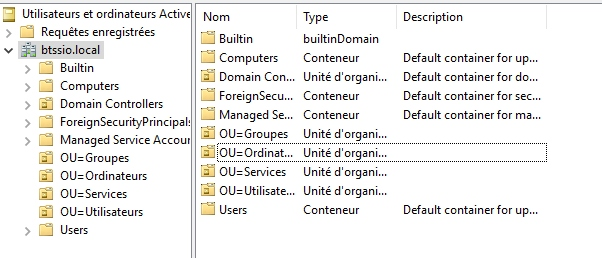
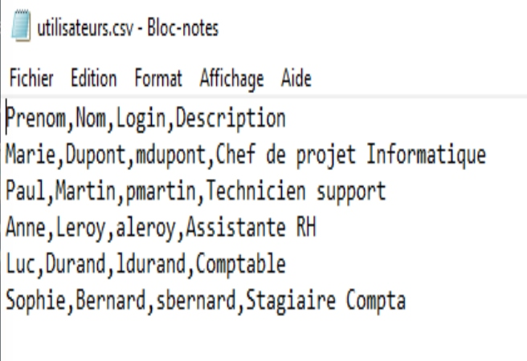
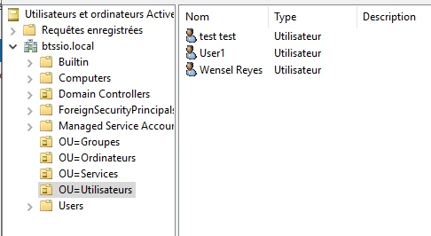
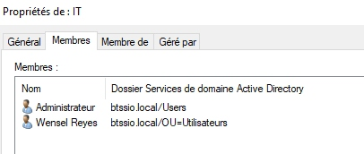
| Nom de la GPO | Lien | Paramètre configuré | Statut |
|---|---|---|---|
| Default Domain Policy | btssio.local | Stratégie de mot de passe | Activé |
| GPO_Restrictions_Logicielles | btssio.local | Blocage de notepad.exe | Activé |
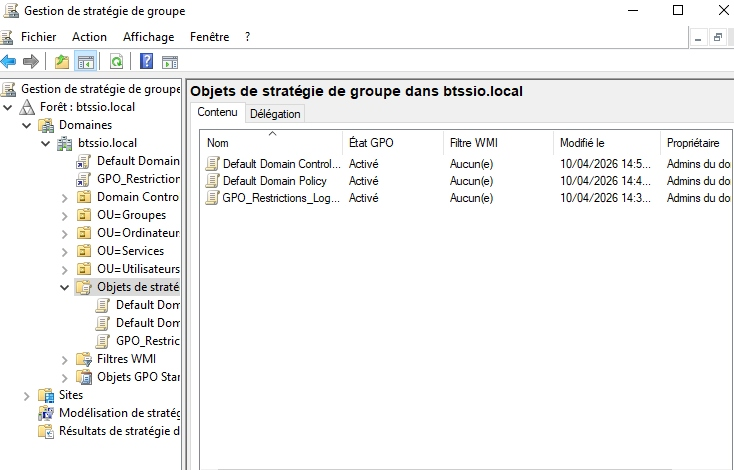
Mots de passe · Verrouillage · 2FA · Audit · ATA
| Paramètre | Valeur configurée |
|---|---|
| Longueur minimale du mot de passe | 8 caractères |
| Complexité requise | Activé |
| Durée de vie maximale | 60 jours |
| Durée de vie minimale | 30 jours |
| Chiffrement réversible | Activé |
| Seuil de verrouillage | 3 tentatives |
| Durée de verrouillage | 15 minutes |
| Réinitialisation du compteur | 15 minutes |
| Verrouillage compte Administrateur | Activé |
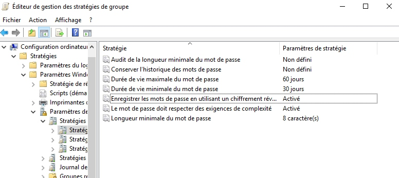
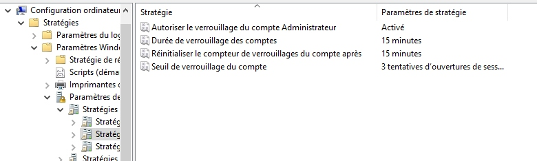
| Stratégie d'audit | Paramètre |
|---|---|
| Auditer les événements de connexion aux comptes | Réussite, Échec |
| Auditer les événements de connexion | Réussite, Échec |
| Auditer la gestion des comptes | Réussite, Échec |
| Auditer l'accès aux objets | Réussite, Échec |
| Auditer l'utilisation des privilèges | Réussite, Échec |
| Auditer le suivi des processus | Réussite, Échec |
| Auditer les événements système | Réussite, Échec |
| Auditer les modifications de stratégie | Réussite, Échec |
| Auditer l'accès au service d'annuaire | Réussite, Échec |
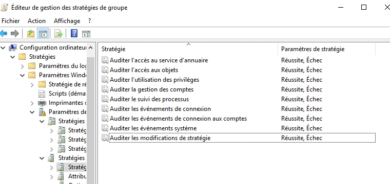
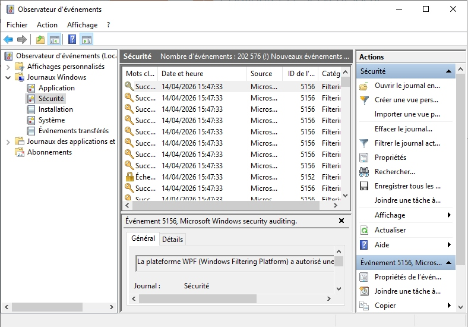